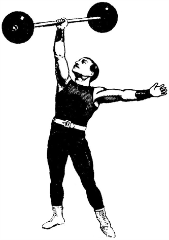

PERFORMANCE
"Les espèces qui survivent ne sont pas les espèces les plus fortes, ni les plus intelligentes, mais celles qui s'adaptent le mieux aux changements."
Charles DARWIN
Charles DARWIN
En marge des aspects techniques et physiques, il y a le facteur mental qui joue un rôle déterminant face à l'épreuve, l'adversité, la difficulté ou la pression psychologique liée à un événement important. Se définissant comme un outil, une méthode de communication et d'exploration de l'inconscient, l'hypnose moderne permet ainsi d'agir sur les capacités physiques et mentales au-delà des limites de la conscience.
Le travail avec l'hypnose sur l'amélioration de la performance est assez large. Voyez cela comme de la préparation mentale. Il y a un regard porté sur la gestion de la sphère émotionnelle, c'est-à-dire travailler sur la confiance en soi, l'affirmation et sur tout ce qui va aider à la performance comme les valeurs, les croyances, la personnalité. Et puis il y a une partie qui est plus technique et qui s'axe sur les ressources, comportements et capacités. Imaginez une personne qui va vouloir progresser techniquement et qui peut savoir exactement ce qu'elle devrait faire mais son corps ne va pas forcément lui répondre comme elle le voudrait. Ici, l'hypnose va permettre de créer une flexibilité mentale et ainsi favoriser l'apprentissage ou la correction d'un geste ou d'une attitude.
Le travail avec l'hypnose sur l'amélioration de la performance est assez large. Voyez cela comme de la préparation mentale. Il y a un regard porté sur la gestion de la sphère émotionnelle, c'est-à-dire travailler sur la confiance en soi, l'affirmation et sur tout ce qui va aider à la performance comme les valeurs, les croyances, la personnalité. Et puis il y a une partie qui est plus technique et qui s'axe sur les ressources, comportements et capacités. Imaginez une personne qui va vouloir progresser techniquement et qui peut savoir exactement ce qu'elle devrait faire mais son corps ne va pas forcément lui répondre comme elle le voudrait. Ici, l'hypnose va permettre de créer une flexibilité mentale et ainsi favoriser l'apprentissage ou la correction d'un geste ou d'une attitude.

L'hypnose est à la racine du coaching. La plupart des méthodes de coaching modernes s'inspirent de Milton Erickson, qui est le père de la communication moderne. Il est reconnu comme l'hypnotiseur le plus talentueux de son époque, et tous les préparateurs mentaux de renom étaient ses élèves.
Ainsi, faire le choix de performer avec l'hypnose, c'est accepter de s'autoriser à pouvoir ...
Ainsi, faire le choix de performer avec l'hypnose, c'est accepter de s'autoriser à pouvoir ...
EN RELATION

PROJET
(NON) CHOIX
STRESS
EMOTION
REPETITION